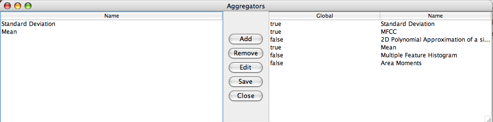

The list of the left side are the currently selected aggregators. The list on the right side is the current set of all possible aggregators. The aggregator appendix containing the detailed descriptions of all built in aggregators.
Adding an aggregator (by double clicking on the right window or clicking the add button) adds an entry on the left side.
